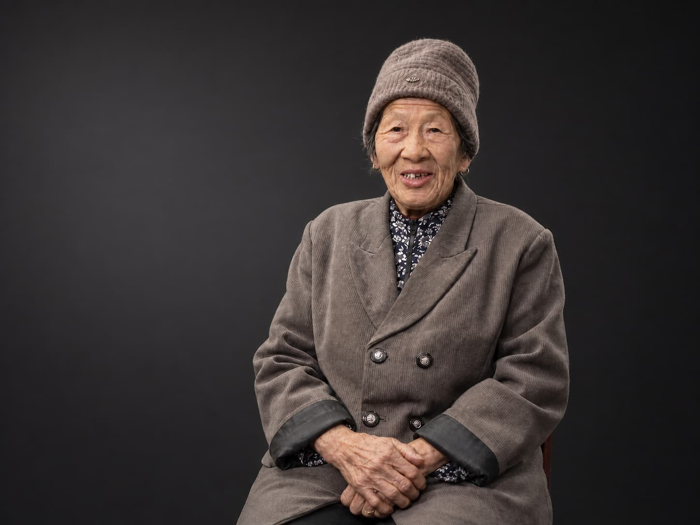
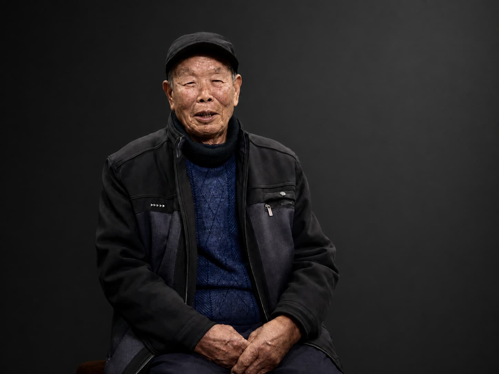
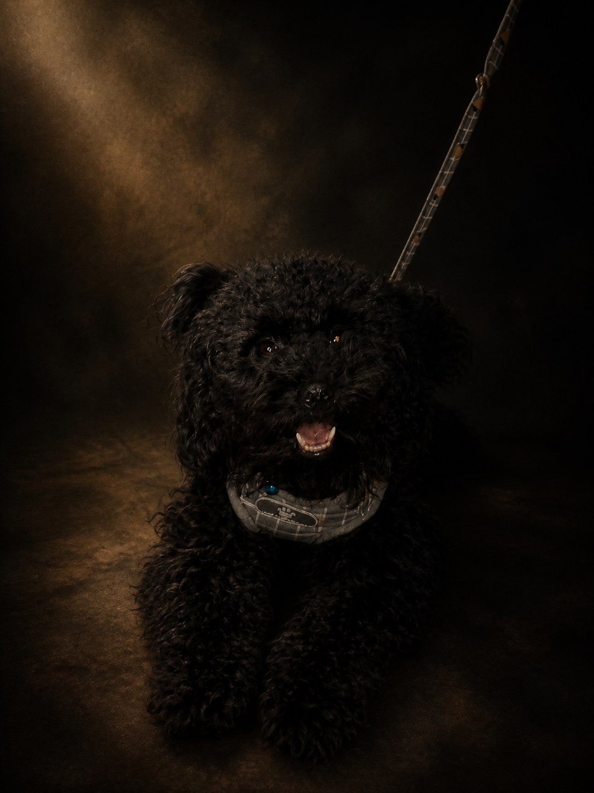
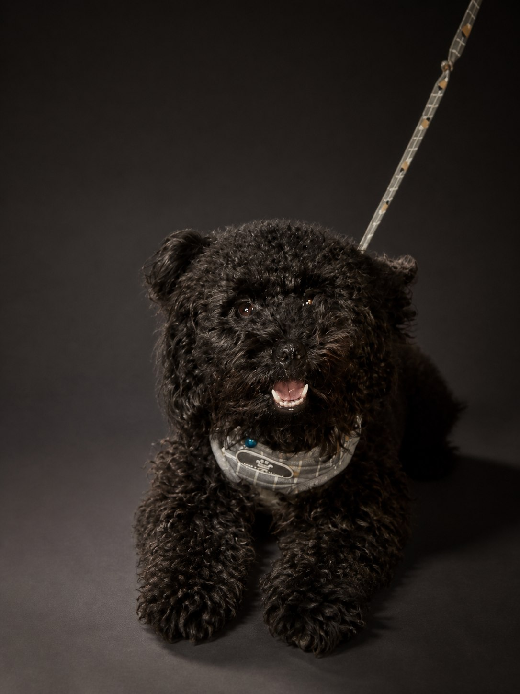
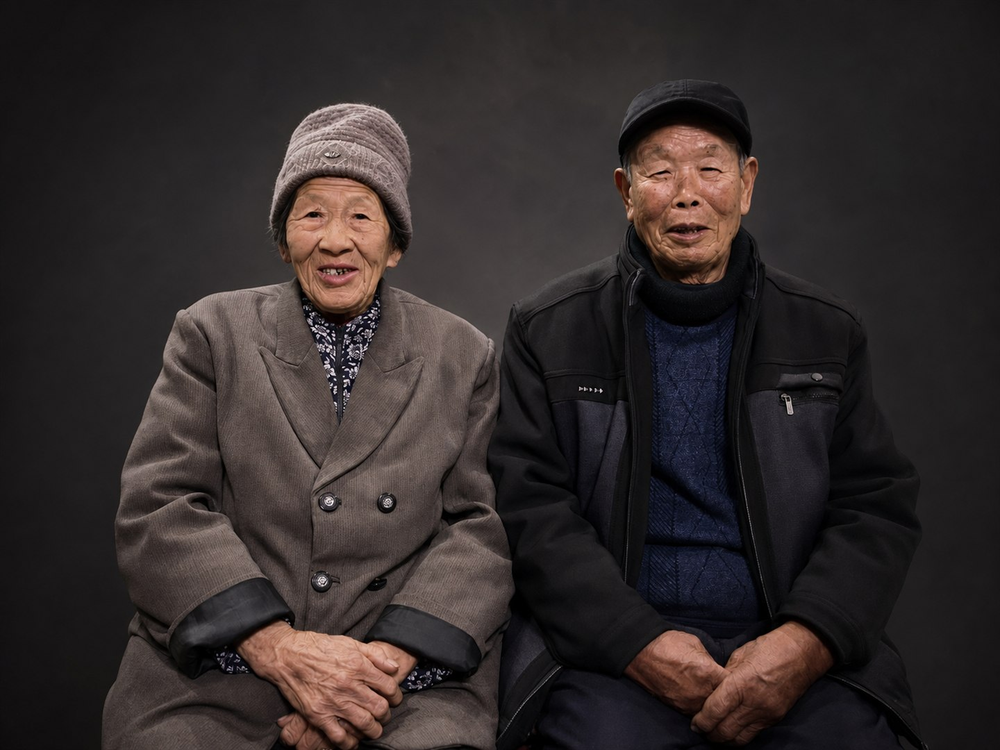

一张家庭合照可保留关系同框，也可为每位成员建立独立任务。
- Skill 控制
- 人数、身份/年龄、关系、共享光向
- 边界
- 生成式拆分不是无损抠图；身份需人工复核
Rembrandt Portrait Lighting · 完整研究与产品化验证
产品模式完成真实任务；探索模式复盘我们从仓库判断、受控 A/B、失败重试到产品推导的全部证据；架构模式拆清 Skill、宿主模型和我们系统的责任。
可继续查看页面下方的静态证据；请确认通过本地 HTTP 服务打开，而不是直接打开文件。
LIVE WORKFLOW
边界：框选位置是记录好的 fixture，不是运行时检测。
上传图片尚未连接检测与生成系统；这里仅编译一个可执行任务计划。
同一张双人生活照可以保留关系同框，也可以拆成两个独立生成任务；不是像素无损抠图。
接收已经确定的主体与用途，诊断几何并建立身份、关系和可见解剖锁。
这一步不生成像素。它把审美经验变成模型可执行、团队可验收的约束。
尚未作出人工决定。
包含输入边界、Skill 规则、候选证据、QA 与人工决定。
EXPLORATION LOG · REVISION 0—7
我们先判断仓库是什么，再用上游样例、宠物受控 A/B、人物签名压力测试、失败重试与多画幅实验逐层收窄结论。这里展示的是研究过程，不是事后包装。
检查是否存在模型权重、推理代码、API、批处理或独立运行入口。
核心由诊断分支、身份不变量、灯位/光比、画幅规则、失败检查和一次定向重试构成。
不是新的渲染模型。它更像“摄影导演 + 质检规程”：把模糊的审美需求，编译成模型可执行、团队可验收的规则包。


两位主体分别进入独立肖像任务，年龄、帽子、眼镜和服饰保持可辨。
生成结果是重建，不是像素无损提取；上游素材许可也未解决。



主要像素能力来自底层编辑器；Skill 的增量是收束输出空间，让背景、色彩、光向、毛发分离和失败条件更一致。单图单次 A/B 不是统计胜率。
Skill 能规定目标并正确拒绝坏结果，但文本约束不能稳定保证像素级阴影解剖。“失败可审计”本身就是它的重要生产价值。

身份、服装、主光、背景被锁定，只改变用途几何。
说明构图规则可执行，但生成式 outpaint 不是无损排版。
图像型场景必须绑定真实输入/输出；过程型场景展示真实诊断、QA、失败记录或配置，不把方法证据伪装成新图片能力。
家庭、品牌、宠物有真实结果；QA、预演是方法可用；企业/API 必须明确系统缺口。
它同时利用多人分支、多画幅、失败检查和人工审批。
家庭保留/分别、品牌四画幅、本地上传空状态、人工 QA 与任务 JSON 已形成可运行闭环。
内置结果是已保存证据；上传只预览，检测、生成与自动相似度明确为 pending。
9-SCENARIO EVIDENCE LAB
“效果图”不是唯一证据类型。摄影预演、团队 QA、模型回归和垂直模板的价值发生在生成前后，因此用真实过程记录演示。
一张家庭合照可保留关系同框，也可为每位成员建立独立任务。
同一身份锁变成头像、社交、专访和横版封面四个独立交付面。
猫狗走宠物专用侧向低调光，不硬套人类面颊三角。
用用途规则决定安全区、裁切保护和编辑留白。
先输出灯位与风险 brief，再决定拍摄或生成。
共享检查语言、失败留档、一次缺陷驱动重试与拒收门槛。
不同主体共享深炭背景、克制暖高光与完成度，但光型按人脸/宠物几何分支。
固定源图、基线、候选与拒收重试，形成可追溯 fixture。
这套结构可迁移到产品、服装或建筑视觉，但必须重写领域诊断与失败标准。
7 PRODUCT DIRECTIONS
每个方向都说明用户输入、可见输出、Skill 责任、我们要补齐的能力与当前证据边界。
有真实输入/输出证据
规则与流程可执行，自动系统未建
必须增加平台能力才能交付
NO-JS / CAPABILITY FALLBACK
以下都是研究项目中已保存的真实样例。页面增强层只负责组织选择、规则和审批，不凭空增加图像能力。
多人同框的价值不只在“拆分”，更在于关系锁、共享光向和可拒收的生产规范。
不是用一张成片机械裁四次，而是让每个格式继承同一身份、光型和失败条件。
SYSTEM RESPONSIBILITY MAP
下面把一次任务拆成五步，明确原生 Skill、宿主图像模型和我们要建设的产品系统分别拥有哪一段能力。切回产品模式更换 fixture，这里的当前任务包会同步更新。
找到人、宠物、遮挡、人物对应关系与可选蒙版；由人工确认。
判断主体几何，锁定身份、年龄、服装、人数、关系与可见解剖。
真正合成光影、背景、构图与像素细节；随机性和模型上限仍存在。
Skill 命名失败项；我们增加身份、关键点、背景与批量指标。
人工决定、版本、授权、存储、保留期、删除和多格式交付。
EXPANSION HORIZONS
三层路线分别解决模型适配、可测量生产和真实产品治理；每一层都保留 Skill 作为稳定的规则 schema。
WHAT IT MEANS FOR US
对单张高情感价值肖像，直接获得主体诊断、身份约束、灯位、背景与失败词。
把“感觉不对”变成 closed-loop、身份漂移、背景纹理、光向冲突等可复核检查项。
同一 schema 可以连接不同模型、QA 指标、任务系统和多种交付面。
我们知道模型负责像素，Skill 负责规则，产品价值来自可操作、可度量、可治理的组合。